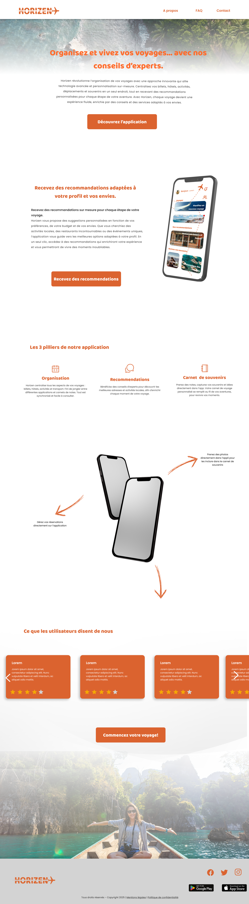

Horizen
Horizen est une application mobile de voyage permettant aux utilisateurs de réserver facilement des séjours, des activités et des expériences dans le monde entier.
Maquette Web Immersive
Faites défiler dans la fenêtre pour parcourir l'interface complète de la landing page (cliquez pour agrandir en plein écran).

Cliquez pour dérouler la Charte Graphique


Refermer la charte graphique
Notes sur le projet
Horizen est un projet fictif réalisé lors d’une immersion professionnelle. J’y ai conçu l’identité visuelle et l’expérience utilisateur d’une application mobile de planification de voyage, à partir de contraintes graphiques précises : style minimaliste et moderne, palette vive limitée et symbolique liée au voyage.
Réalisé en autonomie avec des retours réguliers, le projet comprend la création du logo, de la charte graphique, d’une landing page promotionnelle et des maquettes de l’application.
L’interface mobile s’articule autour d’un dashboard simple et intuitif, permettant de suivre ses voyages, d’accéder à des recommandations et de conserver ses souvenirs via un carnet de bord. Ce projet m’a particulièrement permis de développer ma réflexion UX, notamment sur la structuration de l’information et l’expérience utilisateur globale.